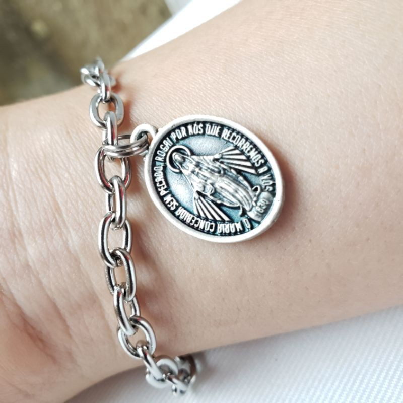
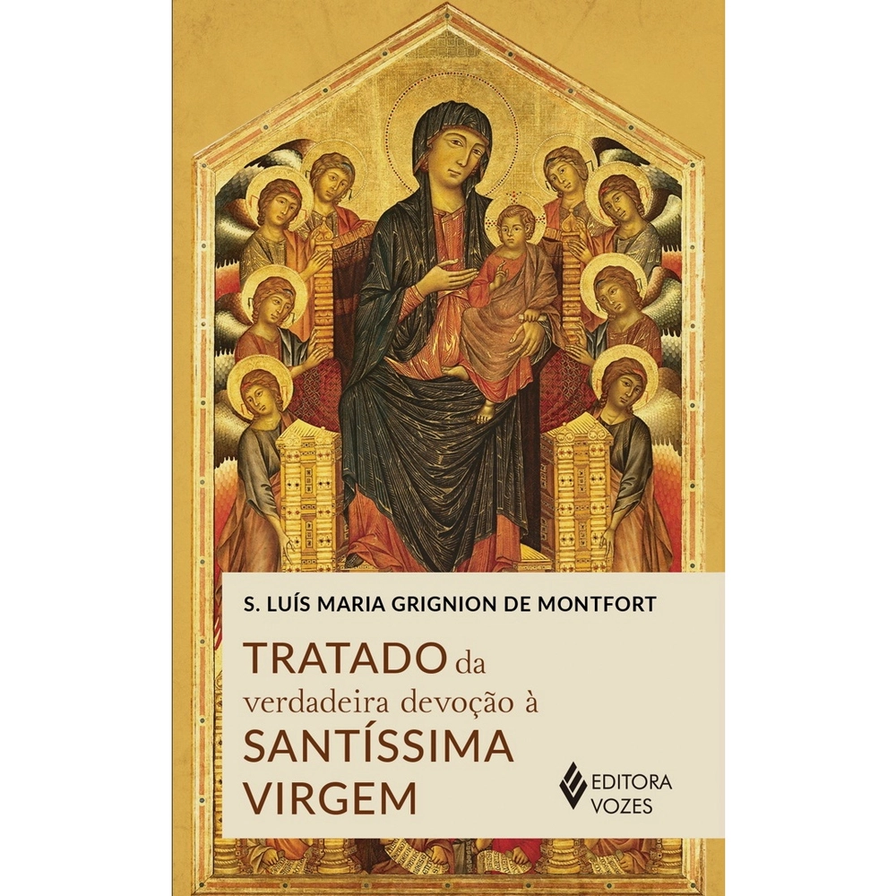
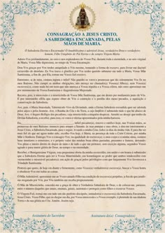

Consagração a si mesmo Jesus, sabedoria encarnada pelas mãos de Maria
Totus Tues Marie.
A Consagração a Virgem Maria é uma perfeita devoção. Totus tues marie, ou seja, uma intrega por inteiro.
São Luís Maria Grignion de Montfort no Tratado da Verdadeira Devoção à Santíssima Virgem, confirma que as cadeias são sinais externos da consagração, e que além de simbolizar o rompimento com o pecado, também dá testemunho para as pessoas que estão ao nosso redor. Representa a escravidão voluntária a Jesus Cristo.
O ato de consagrar-se a Nossa Senhora é uma forma de confiar a Ela : o corpo, a alma, os bens, as ações, enfim, de confiar a própria vida à proteção, à direção, ao cuidado e intercessão de Nossa Senhora.
O primeiro passo para se consagrar a Nossa Senhora pelo método de São Luís Maria Grignion de Montfort é a leitura do “Tratado da Verdadeira Devoção à Santíssima Virgem”, escrito pelo próprio santo. Por meio dessa leitura, é possível compreender de forma mais completa e profunda a devoção mariana proposta pelo autor. Esse livro foi escondido pelo demônio durante 130 anos, São Luís previu que seria escondido em um baú, só não sabia por quanto tempo. Quem achou foi um padre morfondino que ao mecher em umas papeladas da igreja encontra essa joia rara.
A consagração é totalmente Cristocêntrica, pois, buscamos a Maria como um molde/instrumento para chegarmos a Jesus por meio dela. Ela é a forma mais fácil de chegarmos a jesus para daí nos unirmos a Santísima Trindade.
Para se consagrar é preciso escolher uma data mariana, estar em estado de graça fazendo uma confissão geral, são 30 dias de oração sendo 12 dias para orar pedindo desapego ao mundo, e mais três semanas de orações tirando os domingos totalizando os trintas dias. No dia tem que ler a formúla na frente da imagem que vai se consagrar e fazer um mimo a Maria, como: fazer caridade, levar uma rosa a ela, etc. Recomendaçoẽs: Assista as aulas do Padre Paulo Ricardo pelo youtube para saber mais.
Nunca é tarde para mudar a direção da sua vida!